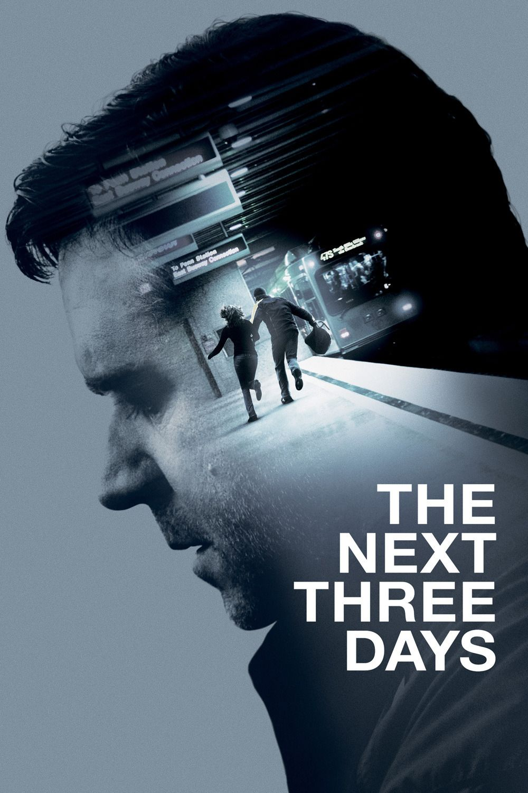

🍿 La cloroteca |
⤶ Volver al inicio |

Advertencia de spoilers
Está película verdaderamente me sorprendió, ya que no mucho se espera de una película de acción hollywoodense. Los próximos tres días cuenta la historia de una familia a quienes el mundo se les va abajo ya que la madre es culpada de asesinato. Su esposo hará todo lo posible para sacarla de allín ya que el cree que es inocente.
Y ese es una buena decisión por parte del director nunca dejar en claro si la esposa es inocente o no hasta el final. Además, la desesperación del protagonista por cuidar a su hijo y a la vez idear un plan para sacar a su esposa es lo mejor, ya que sentimos en carne propia como sería si nos pasara algo igual.
La película pierde algunos puntos por ser un remake del largometraje francés Pour elle (que no tuve oportunidad de ver), además que convenientemente al final todo se le complica a la familia para tener unos últimos minutos de infarto, pero poco o nada afectan a la película.